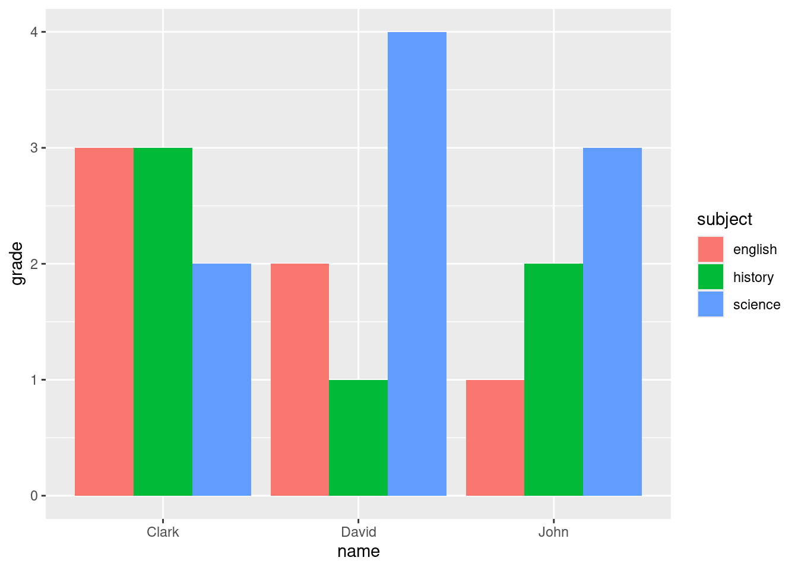

suppressPackageStartupMessages(library(dplyr))
suppressPackageStartupMessages(library(tidyr))Data can be reshaped by
transforming columns into rows
rows into columns
This is directly combined with wide and tidy-data.
school_wide <- data.frame(name = c("Clark", "John", "David"),
science = c(2, 3, 4),
english = c(3, 1, 2),
history = c(3, 2, 1))If you want to transform data from wide to tidy you can use functions from package tidyr. The relevant function is gather(). You need to provide some parameters
a key parameter name, which represents the columns. I will call the resulting column subject
a value parameter, which will be the name of the columns holding the values
Finally, you need to define which columns to use for transformation. Here this is 2:4.
school_tidy <- school_wide %>%
gather(key = "subject", value = "grade", 2:4)
school_tidy## name subject grade
## 1 Clark science 2
## 2 John science 3
## 3 David science 4
## 4 Clark english 3
## 5 John english 1
## 6 David english 2
## 7 Clark history 3
## 8 John history 2
## 9 David history 1The function with the opposite effect is spread(). You need to pass the exact same parameters:
key: here you define the column name of the key-column
value: you pass the chosen name of the column with the values
school_wide <- school_tidy %>%
spread(key = "subject", value = "grade")
school_wide## name english history science
## 1 Clark 3 3 2
## 2 David 2 1 4
## 3 John 1 2 3Both have their right to exist. Wide data typically comes from other programs. Excel or SPSS usually work with wide-data.
For specific tasks it is better to transform wide-data (also called messy data) into tidy-data. I will show two examples.
Assume you want to calculate average class-grades per subject. With wide data you would do something like this:
mean(school_wide$english)## [1] 2mean(school_wide$science)## [1] 3mean(school_wide$history)## [1] 2You repeat your code several times, which should be avoided. If there are only three columns, that is ok, but imagine you want to calculate the average for 50 columns.
Here is the solution based on tidy-data. You need to load dplyr package and make use of group_by() and summarise(). The code is much cleaner.
dplyr and tidyr are part of the tidyverse, which is a bunch of different packages, which rely on tidy-data.
school_tidy %>%
group_by(subject) %>%
summarise(mean_grade = mean(grade))## # A tibble: 3 × 2
## subject mean_grade
## <chr> <dbl>
## 1 english 2
## 2 history 2
## 3 science 3Assume you want to plot the results with ggplot2. This is done with three lines of code. Trying to get a similar representation based on wide-data will result in much more complex code.
library(ggplot2)
g <- ggplot(data = school_tidy,
mapping = aes(x = name, y = grade, fill = subject))
g <- g + geom_bar(stat = "identity", position = "dodge")
g
You have seen how easy it is to transform data from wide to tidy, and reverse. You also saw some examples in which tidy-data has advantages over wide-data.